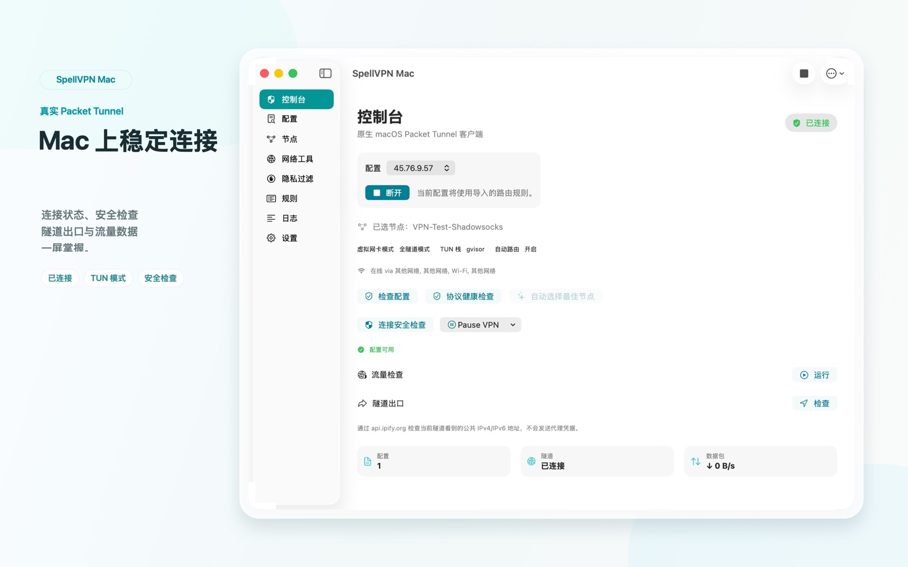

SpellVPN Tool · iOS / Mac
SpellVPN Tool 是 iOS 与 macOS 的付费无广告配置客户端，不提供服务器节点、预设来源目录或节点服务内购订阅。用户需要导入自己有权使用的配置、节点或订阅 URL。客户端可依据导入配置建立 VPN 连接，并非仅离线查看文件的工具。

SpellVPN Tool · iOS / Mac | SpellVPN Ultra · iOS
Tool：付费、无广告，仅使用用户自行提供的配置。iOS Ultra：含广告，可选订阅可去广告，并提供精选来源和专属线路。

支持扫码、照片二维码、剪贴板、文件、Wi-Fi 上传、订阅 URL、代理链接和 URL Scheme。可处理 sing-box JSON、Clash/Mihomo YAML、Base64 URI 列表、SIP008、Surge、Quantumult、Shadowrocket 风格文本和常见代理链接。
管理已保存订阅 URL，支持更新、复制、删除；可选择节点、编辑真实代理 outbound、单节点 JSON 导出并显示节点二维码。
可使用连接配置档、VPN 暂停、隐私过滤、DNS 管理、TCP Ping、DNS 查询、IP 查询、Whois、GeoIP、TLS、HTTP、TCP/UDP、IPv6 和测速等网络工具，Home/Lock Screen Widget、基础 App Shortcuts、本地日志、诊断报告、JSON 导入导出和 iCloud Drive App 数据备份。
Tool：付费、无广告，仅使用用户自行提供的配置。iOS Ultra：含广告，可选订阅可去广告，并提供精选来源和专属线路。
SpellVPN Tool Mac 版导入用户自行提供的配置，通过原生 macOS Packet Tunnel 建立连接，不含广告、App Store 订阅或内置节点服务。通过订阅提供精选来源和专属线路的是独立的 iOS Ultra 版本。
官网说明更新于 2026 年 9 月 12 日
SpellVPN Tool 是 iOS 与 macOS 的付费无广告配置客户端，不提供服务器节点、预设来源目录或节点服务内购订阅。用户需要导入自己有权使用的配置、节点或订阅 URL。客户端可依据导入配置建立 VPN 连接，并非仅离线查看文件的工具。
SpellVPN Ultra 是包含广告和可选 App Store 自动续期订阅的 iOS 版本。有效订阅可去除广告，并访问服务提供的“精选来源（Curated Sources）”和“专属线路（Exclusive Lines）”。Ultra 也支持用户自行导入。服务提供的配置是实际订阅权益，不能只概括为去广告。
官网说明更新于 2026 年 9 月 12 日
SpellVPN Tool 会访问用户导入配置中的订阅、DNS 与服务器端点。SpellVPN Ultra 使用精选来源或专属线路时，还会向 apixx.spellv.com 请求服务内容，并可能继续访问返回的订阅和节点端点。远端服务会收到处理请求所需的网络信息，例如 IP 地址与 HTTP 请求元数据。VPN 流量由当前配置中选用的服务器处理。这些请求与 App Store 购买处理、Ultra 广告请求分别发生。
在 SpellVPN Ultra 中打开“设置 → 订阅 → Ultra 订阅”，查看套餐、购买或恢复购买。拥有有效权益后，可从正常界面访问精选来源或专属线路；“我的导入”与服务提供的内容分别管理。购买或来源加载失败时，请向支持人员提供 App 版本和错误提示，不要发送密码或完整订阅 URL。
周、月、季、年自动续期套餐由 Apple 处理。实际价格、周期和续期条款以 App Store 购买确认页为准；可在 App 内恢复符合条件的购买，并在 Apple 账户中管理订阅。来源内容和连接情况可能变化，订阅不代表永久节点、无限流量或特定地区可用性的承诺。
SpellVPN Tool iOS 与 Mac 的历史界面示例。示例节点名称和连接指标不代表当前可用服务器或实时连接；Ultra 的订阅权益见上方独立说明。




Tool：付费、无广告，仅使用用户自行提供的配置。iOS Ultra：含广告，可选订阅可去广告，并提供精选来源和专属线路。